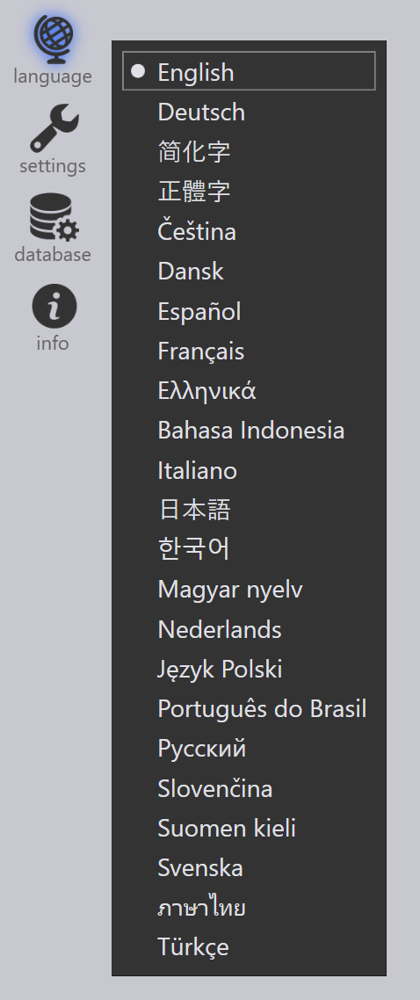

소프트웨어 설치하기
설치 준비하기
시스템 전제조건
-
다음 운영체제 중 하나를 갖추어야 합니다. Windows 7에는 서비스 팩 1이 설치되어 있어야 하며, 그렇지 않은 경우 TecZone Bend는 Windows 7에서 작동할 수 없습니다.
-
Windows 7 SP1, 64비트 (Windows 7 SP1은 확장 보안 업데이트가 설치된 경우 지원됨)
-
Windows 8.1, 64비트
-
Windows 10, 64비트
-
Windows 11, 64비트
-
-
8 GB RAM (16 GB 권장)
-
1024 x 768 모니터 해상도 (1920 x 1080 권장)
-
OpenGL 4.0 지원 그래픽 카드 (Nvidia 개별 GPU 권장)
-
3버튼 마우스 또는 트랙볼
소프트웨어 설치하기

TecZone BendSetup.exe 를 실행합니다 (정확한 파일 이름은 다를 수 있으며, 개정 번호 또는 날짜가 포함될 수 있음). 필수 조건(예: .Net Framework)이 아직 설치되지 않은 경우 설치 완료에는 최대 15분이 소요될 수 있습니다. 필수 조건이 이미 설치된 경우 설치에는 약 1~2분 정도가 소요됩니다.
TecZone Bend를 설치하려면 지침을 따르십시오. 이 설치 프로세스를 통해 TecZone Bend 애플리케이션의 바로 가기가 바탕 화면과 시작 메뉴에 생성됩니다. TecZone Bend.exe 프로그램을 직접 실행하여 애플리케이션을 시작할 수 있습니다.